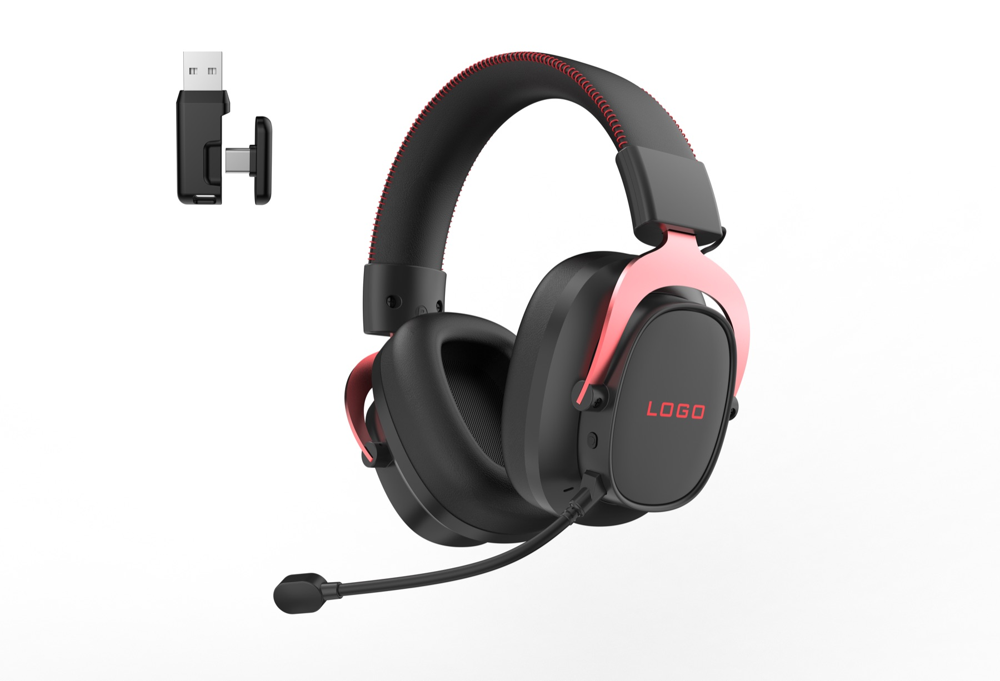
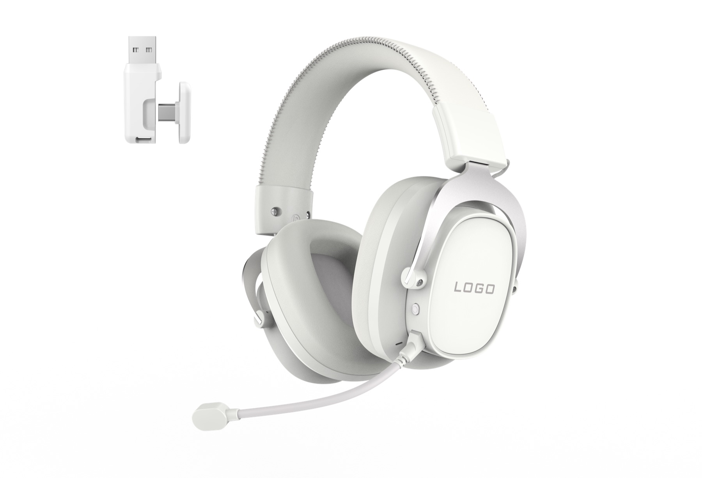

Watch on YouTube
A short product demonstration for buyers reviewing microphone noise-reduction direction and G941 wireless gaming headset positioning.

Tri-mode wireless gaming
A premium wireless gaming headset direction for collections that need 2.4G receiver positioning, Bluetooth and wired use in one hero model.
Product video
Watch the short demonstration on the official TALRIVO YouTube channel, then use the product page for model details, buyer questions and sample discussion.
A short product demonstration for buyers reviewing microphone noise-reduction direction and G941 wireless gaming headset positioning.
Key points
Review the visual direction, key model notes and available customization details before contacting TALRIVO.
Use G941 when comparing 2.4G receiver direction, Bluetooth listening and wired connection needs in one wireless gaming headset story.
The ANC positioning helps G941 sit as a higher-end wireless headset direction when customers compare hero models.
Black-red supports stronger gaming styling, while the white version gives a cleaner product direction for softer assortments.
The visible boom microphone supports gaming communication, product video demonstrations and headset detail explanations.
Product images
Use these image notes to compare visual direction, USB-C receiver detail, boom microphone and earcup logo area.

Red stitching and side frame accents create a stronger gaming look for product display and social posts.

The white colorway gives a quieter product style for customers comparing softer visual options.
The receiver shown in the product images gives a concrete visual point for 2.4G wireless headset explanation.
The earcup logo area is easy to discuss for logo direction, product photography and packaging planning.
Customization
Product fit
Use these points to understand where this model fits in a product collection.
Product FAQ
Yes. Share target market, quantity range and branding needs so sample and packaging details can be discussed.
Yes. Its tri-mode and ANC positioning make it useful as a higher-end wireless gaming headset option.
G941 is a useful model to review when a buyer needs a premium wireless gaming headset direction with 2.4G receiver positioning, boom microphone structure, color options and custom logo discussion.
Buyers should check product positioning, sample comfort, microphone use, receiver story, color direction, logo area, packaging plan, target market and required documents before bulk-order discussion.
Yes. Logo, color, packaging and user manual direction can be reviewed after model interest is confirmed.
Related pages
Contact TALRIVO for model details, samples, packaging options and product documentation.